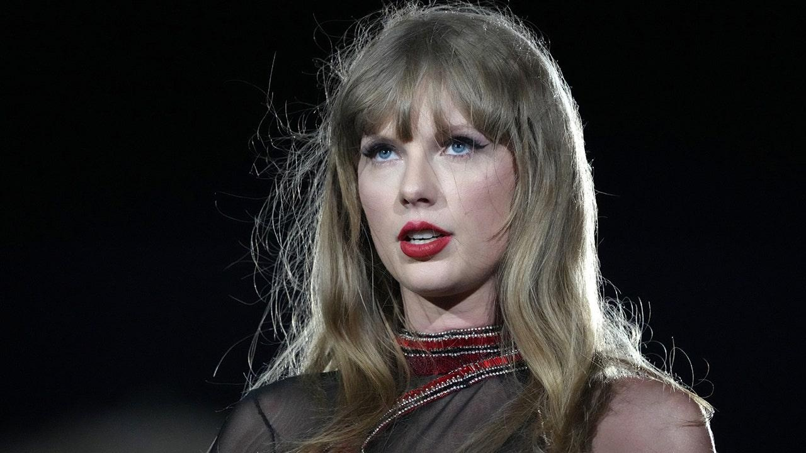

Taylor Swift fans go ballistic after new album reportedly leaks onlineHell hath no fury like a Swiftie scorned. Hours before Taylor Swift's eleventh studio album, "The Tortured Poets Department," is set to be released, reports of a leak circulated online. Fans of the 14-time Grammy Award winner went ballistic online, voicing their disdain for anyone who actively chose to listen to the leaked music, whether legitimate or not. "Definitely NOT listening to the leaks," one user wrote to X. "Disappointed in anyone who would purposely take away from an artist who works so hard, and plans things for her fans to make it special. As someone experiencing this for the first time, and I know A LOT of other newbies…why try and ruin this for them too??" They added a GIF of an amped-up Travis Kelce (Swift's boyfriend) to emphasize their disgust. "If you listened to the leaks you’re not a real swiftie and don’t respect taylor," another person suggested. "F-- you if you're spreading or listening to leaks and an even bigger F--- YOU if you claim to be a swiftie while doing so," a fan page for Swifts' Eras Tour commented. "Love all the fans who clog up this hashtag #TTPDleak," another wrote. One more fan shared a photo of Swift writing, "God please take all her pain & give it to everyone who has listened to & spread the leaks," while another wrote, "hope taylor knows her real fans would not listen to or spread leaks and that we love her." A representative for both Swift and her label, Universal Music Group, did not immediately respond to Fox News Digital's request for comment. Her album is scheduled to be released on Friday. Reports have circulated that X has blocked certain phrases like ‘Taylor Swift Leak’ and other aligned language from its search bar in an effort to combat the leaks. Fox News Digital has reached out to a representative at X for further clarification. This isn't the first time Swift's music has leaked. In 2014, Swift's album "1989" was shared on the internet two days prior to its official release. In an interview with NPR, Swift lauded her fans for tactfully trying to bury the leaks on social media. "Two days before the album came out, it leaked online, and it was the first time I've ever had an album leak without it trending on Twitter — because my fans protected it. Anytime they'd see an illegal post of it, they'd comment, 'Why are you doing this? Why don't you respect the value of art? Don't do this. We don't believe in this. This is illegal. This isn't fair. This isn't right.' And it was wild seeing that happen," she said. Swift fans have been known to fearlessly defend the singer-songwriter whenever controversy surrounding her has stirred. In January, after The New York Times ran an opinion piece that questioned her sexuality, the publication quickly learned what it meant to have bad blood with a devoted fan base, by being bashed on social media. |
 |